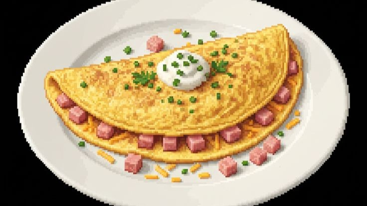

Omelete INGREDIENTES Ovos – 2 unidades Leite – 1/2 xícara Manteiga – 1 colher (sopa) Sal – a gosto Pimenta – a gosto
Modo de preparo Quebrar os ovos em uma tigela Adicionar o leite e misturar bem Temperar com sal e pimenta Aquecer a manteiga em uma frigideira Despejar a mistura na frigideira Cozinhar em fogo médio Mexer levemente até começar a firmar Dobrar o omelete ao meio Cozinhar por mais alguns segundos Servir quente
 Receita no jogo Ovo x1 Obtido de galinhas no galinheiro. Leite x1 Obtido ao ordenhar vacas no celeiro.